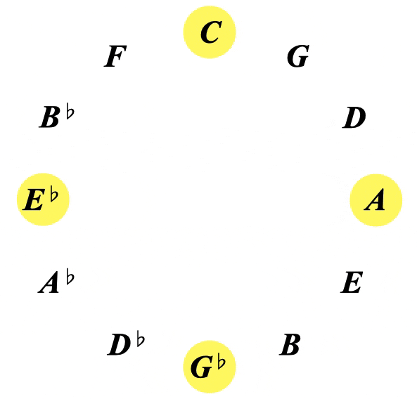

GEOMETRY:
The 3 primary colours present as 3 squares

We've got the yellow square:
the red square:
and the blue square:
which ended with this visual:
The circle of 5ths with the three primary colours inscribed
Let's look at the yellow one
Each corner of the square is a note,
which gives us the 4 yellow notes:
Within this square we can see minor 3rd intevals on every edge or line of the square:
And both the tritone intervals within the diminished chord:
This square shows us the symetrical and cyclic nature of the diminished chord
which doesnt show up quite so clearly on our instruments
We get the same interval structure of minor 3rds and tritones in the blue and red squares also:
The primary colours are squares,